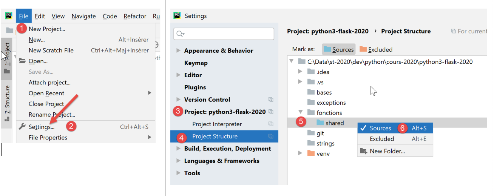
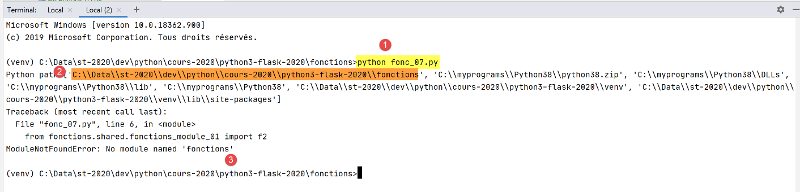

6. Functions

6.1. Script [fonc_01]: variable scope
The script [fonc_01] shows examples of variable scope between functions:
# variable scope
def f1():
# avoid using global variables
# global variable i
global i
i += 1
# local variable j
j = 10
print(f"f1[i,j]=[{i},{j}]")
def f2():
# avoid using global variables
# global variable i
global i
i += 1
# local variable j
j = 20
print(f"f2[i,j]=[{i},{j}]")
def f3():
# local variable i
i = 1
# local variable j
j = 30
print(f"f3[i,j]=[{i},{j}]")
# main program
i = 0
j = 0
# these two variables will only be known by a function f
# only if it explicitly declares in the global instruction that it wants to use them
# or that the function only uses the global variable in read mode
f1()
f2()
f3()
# j hasn't changed but i has
print(f"[i,j]=[{i},{j}]")
Results
C:\Data\st-2020\dev\python\cours-2020\python3-flask-2020\venv\Scripts\python.exe C:/Data/st-2020/dev/python/cours-2020/python3-flask-2020/fonctions/fonc_01.py
f1[i,j]=[1,10]
f2[i,j]=[2,20]
f3[i,j]=[1,30]
[i,j]=[2,0]
Process finished with exit code 0
Notes:
- The script demonstrates the use of the variable i, declared as global in functions f1 and f2. In this case, the main program and functions f1 and f2 share the same variable i.
6.2. Script [fonc_02]: variable scope
The script [fonc_03] builds on the script [fonc_02] and demonstrates how to avoid using global variables:
# variable scope
def f1(i):
# local variable i
i += 1
# local variable j
j = 10
print(f"f1[i,j]=[{i},{j}]")
# return the modified value
return i
def f2(i):
# local variable i
i += 1
# local variable j
j = 20
print(f"f2[i,j]=[{i},{j}]")
# return the modified value
return i
def f3():
# local variable i
i = 1
# local variable j
j = 30
print(f"f3[i,j]=[{i},{j}]")
# main program
i = 0
j = 0
# these two variables will only be known by a function f
# only if it explicitly declares in the global instruction that it wants to use them
# or if the function uses the global variable for reading only
i = f1(i)
i = f2(i)
f3()
# j hasn't changed but i has
print(f"[i,j]=[{i},{j}]")
Comments:
- lines 2, 12: instead of being declared global, the variable [i] is passed as a parameter to the functions f1 and f2;
- lines 9, 19: the functions f1 and f2 return the modified variable [i] to the main program. The main program retrieves it on lines 36 and 37;
Results
C:\Data\st-2020\dev\python\cours-2020\python3-flask-2020\venv\Scripts\python.exe C:/Data/st-2020/dev/python/cours-2020/python3-flask-2020/fonctions/fonc_02.py
f1[i,j]=[1,10]
f2[i,j]=[2,20]
f3[i,j]=[1,30]
[i,j]=[2,0]
Process finished with exit code 0
6.3. Script [fonc_03]: scope of variables
The script [fonc_03] demonstrates a peculiarity of variables used both within a function and in the code calling it, depending on whether the variable is used read-only within the function or not.
def f1():
# here the global variable i is known
print(f"[f1] i={i}")
# here the global variable j is known
print(f"[f1] j={j}")
def f2():
# here the global variable i is not known
# because the f2 function defines a local variable with the same name
# it then has priority
try:
# try displaying the local variable i defined below
print(f"[f2] i={i}")
# the following instruction makes i a local variable of function f2
i = 7
except BaseException as erreur:
print(f"[f2] erreur={erreur}")
def f3():
# here the global variable i is not known
# because the f3 function defines a local variable with the same name
# it then has priority
# the following instruction makes i a local variable
i = 7
# display - here i is known
print(f"[f3] i={i}")
# hand -----------
# global variables to functions
i = 10
j = 20
# call from f1
f1()
print(f"[main] i={i}, j={j}")
# call from f2
f2()
print(f"[main] i={i}")
# call from f3
f3()
print(f"[main] i={i}")
Notes
- line 34: the main code defines a variable [i];
- lines 1–5: the function f1 also uses a variable [i] without assigning a value to it. This is a read of the variable [i]. In this case, the variable [i] used is the one from the calling code, line 34;
- lines 8–18: the function f2 also uses a variable [i] but assigns a value to it on line 16. Assigning a value to the variable [i] in f2 automatically makes [i] a local variable of the function [f2]. This variable therefore "hides" the variable [i] from the calling code;
- line 14: the write operation for the local variable [i] will fail because it has no value when line 14 is reached. It obtains its value on line 16. An exception will occur. For this reason, line 14 has been placed within a try/catch block;
- lines 21–29: function f3 does the same thing as function f2 but defines its local variable [i] earlier;
Results
C:\Data\st-2020\dev\python\cours-2020\python3-flask-2020\venv\Scripts\python.exe C:/Data/st-2020/dev/python/cours-2020/python3-flask-2020/fonctions/fonc_03.py
[f1] i=10
[f1] j=20
[main] i=10, j=20
[f2] erreur=local variable 'i' referenced before assignment
[main] i=10
[f3] i=7
[main] i=10
Process finished with exit code 0
6.4. Script [fonc_04]: parameter passing mode
The script is as follows:
# function f1
def f1(a):
a = 2
# function f2
def f2(a, b):
a = 2
b = 3
return a, b
# ------------------------ hand
x = 1
f1(x)
print(f"x={x}")
(x, y) = (-1, -1)
(x, y) = f2(x, y)
print(f"x={x}, y={y}")
Results
Notes:
- Everything is an object in Python. Some objects are called "immutable": they cannot be modified. This is the case for numbers, strings, and tuples. When Python objects are passed as arguments to functions, it is their references that are passed, unless these objects are "immutable," in which case it is the object’s value that is passed;
- The functions f1 (line 2) and f2 (line 7) are intended to illustrate the passing of an output parameter. We want the actual parameter of a function to be modified by the function;
- lines 2–3: the function f1 modifies its formal parameter a. We want to know if the actual parameter will also be modified;
- lines 14–15: the actual parameter is x=1. Line 2 of the results shows that the actual parameter is not modified. Thus, the actual parameter x and the formal parameter a are two different objects;
- lines 8–10: the function f2 modifies its formal parameters a and b, and returns them as results;
- lines 17–18: the actual parameters (x, y) are passed to f2, and the result of f2 is assigned to (x, y). Line 3 of the results shows that the actual parameters (x, y) have been modified.
We conclude that when "immutable" objects are output parameters, they must be part of the results returned by the function.
6.5. Script [fonc_05]: order of functions in a script
The script [fonc_05] demonstrates that a function cannot be called if it has not been encountered earlier in the code:
# ------------------------ hand
print(f2(100, 200))
# function f1
def f1(a):
return a + 10
# function f2
def f2(a, b):
return f1(a + b)
Notes
- Line 2 will cause an error because it uses the function f2, which has not yet been defined in the script;
Results
6.6. Script [fonc_06]: Order of functions in a script
The script [fonc_06] shows that what applies to the calling code does not apply to functions:
# function f2
def f2(a, b):
return f1(a + b)
# function f1
def f1(a):
return a + 10
# ------------------------ hand
print(f2(100, 200))
Notes
- line 3: the function [f2] uses the function [f1] defined later in the script. However, this does not cause an error. We can therefore conclude that the order in which functions are defined in a Python script does not matter;
Results
6.7. Script [fonc_07]: Using Modules
The [fonc_07] script demonstrates how to isolate functions in a module.

We isolate reusable functions in a module. Rather than moving them from one script to another:
- we place them in a separate file that we declare in a specific way;
- scripts that need these functions 'import' the module that contains them;
The script [fonctions_module_01] is as follows:
# function f2
def f2(a, b):
return f1(a + b)
# function f1
def f1(a):
return a + 10
There are several ways to ensure that the functions in the [fonctions_module_01] script can be referenced by other scripts. These methods differ depending on whether or not the script is executed within [PyCharm].
In [PyCharm], imported modules are searched for in specific folders named [Sources Root]. There are two ways to make a folder a [Sources Root]:

- in [4], the folder has changed color;
After this operation, the [fonctions/modules] folder is recognized as a source folder. You can then write in a script:
To import/use the f2 function defined in the [fonctions_module_01.py] module.
 |
Another method is to use the project properties:
- above, the sequence [1-6] allows the folder [shared] to be used as a folder for storing modules to be imported;
For now, we will not declare any folders as [Sources Root] other than the project root:

Once this is done, we can write the following [fonc-07] script:
# using modules
import sys
# ------------------------ hand
print(f"Python path={sys.path}")
from fonctions.shared.fonctions_module_01 import f2
print(f2(100, 200))
- line 2: we import the object [sys] so that we can use line 5, its attribute [path], which returns what is called [Python Path]: a list of directories that will be searched for imported modules;
- line 6: we import the f2 function from the [fonctions_module_01] module. To specify this module, we use the path leading from the project root to the module. With PyCharm, the project root is always included in the folders searched when looking for an imported module in a script. This folder is therefore part of the project’s [Python Path]. This is what line 5 will allow us to verify;
- line 6: if we were to describe the path leading from the project root to the [fonctions_module_01] folder, we would write [fonctions/shared/fonctions_module_01]. In a module’s path, the / character is replaced by a dot. We therefore write [fonctions.modules.fonctions_module_01];
- After line 6, the function f2 is known. We use it on line 8;
Results
Above:
- highlighted in green, we can see that the project root is part of [Python Path];
- highlighted in yellow, we can see that the folder containing the executed script is also part of [Python Path];
- the other elements of [Python Path] come directly from the Python installation folder;
What happens when PyCharm is not used to execute [fonc-07]?


- In [1], the script [fonc-07] is executed. We are located in the [fonctions] folder;
- In [2], we see that the execution folder is part of [Python Path]. This is always the case. We can also see that the root folder [C:\\Data\\st-2020\\dev\\python\\cours-2020\\python3-flask-2020] is not part of [Python Path];
- in [3], the Python interpreter reports that it cannot find the module [fonctions];
To find the imported module [fonctions.shared.fonctions_module_01], the Python interpreter searches the folders within [Python Path] for a subfolder named [fonctions]. It cannot find it anywhere. This is because the [fonctions] subfolder is located under the [C:\Data\st-2020\dev\python\cours-2020\python3-flask-2020] folder, which is not part of [Python Path].
The [fonc-08] script provides a possible solution to this problem.
6.8. Script [fonc_08]: Add folders to [Python Path]
It is possible to modify [Python Path] programmatically, as shown in script [fonc-08]:
# using modules
import os
import sys
# script folder
script_dir = os.path.dirname(os.path.abspath(__file__))
# Python Path before modification
print(f"Python path avant={sys.path}")
# we add the folder [shared] to the Python Path
sys.path.append(f"{script_dir}/shared")
# Python Path after modification
print(f"Python path après={sys.path}")
# import f2
from fonctions_module_01 import f2
# ------------------------ hand
print(f2(100, 200))
Notes
- line 4: the special variable [__file__] is the name of the script being executed. Depending on the execution context, this name can be absolute (PyCharm) or relative (console). The function [os.path.abspath] returns the absolute path of the file whose name is passed to it. The function [os.path.dirname] returns the absolute path of the directory containing the file whose name is passed to it;
- line 10: [sys.path] is an array containing the names of the folders to be searched when a module is looked for. The project root defined on line 4 is added to this array;
- we display [Python Path] before (line 8) and after (line 12) modification;
- line 15: we import the module [fonctions_module_01], which contains the function f2;
Execution in PyCharm yields the following results:
- line 3: we see that the folder [shared] appears twice in [Python Path]. This can be avoided, but it doesn’t cause any issues here;
- line 4: the f2 function was successfully executed;
Now let’s run [fonc-08] in a terminal:
- line 2: as before, the [shared] folder is not in [Python Path];
- line 3: now it is there;
- line 4: the function f2 was found;
6.9. Script [fonc_09]: parameter type declaration
The [fonc_09] script demonstrates that you can declare the types of a function's parameters as well as its return type. However, this declaration is only useful for documenting the function. The Python interpreter does not verify that the actual function parameters are indeed of the expected type. However, PyCharm flags type inconsistencies between actual and formal parameters. This reason alone makes type declarations essential.
The script is as follows:
# a function with parameter type indication
# this is for documentation purposes only, as the python interpreter ignores it
def show(param: int) -> int:
print(f"param={param}, type(param)={type(param)}")
return param + 1
# hand -------------------------
print(show(4))
show("xyz")
Notes:
- line 5: we declare that the formal parameter [param] is of type [int] and that the function's return value is also of type [int];
- line 11: the actual parameter of the function [show] is of the correct type;
- line 12: the actual parameter of the function [show] is not of the correct type;
Results
- line 10: the type of the parameter [param] is [str]. When this message appears, we have already entered the code of the function [show]. The Python interpreter therefore accepted that the actual parameter of the [show] function is of type [str];
- line 7 of the code triggers the exception reflected in lines 4–10 of the results;
PyCharm nevertheless indicates that there is an anomaly:

In [1], PyCharm has highlighted the incorrect call.
6.10. Script [fonc_10]: named parameters
To pass parameters to a function, you can use the names of its formal parameters. In this case, you are not required to follow the order of the formal parameters:
# we can refer to the actual parameters by their formal names
def f(x, y):
return x + y
# hand
print(f(y=10, x=3))
Notes
- line 2: the function f has two formal parameters, x and y;
- line 7: when calling the function f, you can use the names of the formal parameters. This practice can be useful in at least two cases:
- the function has many parameters, most of which have default values. When calling the function, this technique allows you to initialize only those parameters for which you do not want to use the default value;
- if the formal parameters have meaningful names, then using named parameters in the function call improves code readability;
Results
6.11. Script [fonc_11]: Recursive Function
The script [fonc_11] is an example of a recursive function (which calls itself):
# recursive function
def fact(i: int) -> int:
# factorial(1) is 1
# a recursive function must terminate at a certain point
if i == 1:
return 1
else:
# factorial(i)=i*factorial(i-1)
return i * fact(i - 1)
# ---------- hand
print(f"fact(8)={fact(8)}")
Comments
- lines 1-9: the factorial function;
- line 9: the function [factorielle] calls itself;
- lines 5-6: a recursive function must always stop when a condition is met; otherwise, infinite recursion occurs;
Results
6.12. Script [fonc_12]: Recursive Function
The [fonc_12] function provides further details on how recursion works:
# recursive function
# behavior of parameter j
def fact(i: int, j: int) -> int:
# stop recursive function
if i == 1:
print(f"j={j}")
return 1
else:
# we manipulate j
j += 1
print(f"avant fact j={j}")
# recursivity
f = fact(i - 1, j)
print(f"après fact j={j}")
# result
return i * f
# ---------- hand
print(f"fact(8)={fact(8, 0)}")
Comments
- Line 5: We are still working with the factorial function. We add the parameter [j] to it;
- Line 12: The variable j is incremented after each factorial calculation. We display its value before (line 12) and after (line 16) the recursion (line 15);
Results
- lines 2–8: we see that the value of [j] increases as long as the recursion continues until it meets the condition where the recursion stops. From that point on, the return from calls to the function [fact] occurs in the reverse order of the calls;
- lines 10–16: these displays reflect the successive returns from the factorial call. The variable [j] reverts to its initial value of 1;